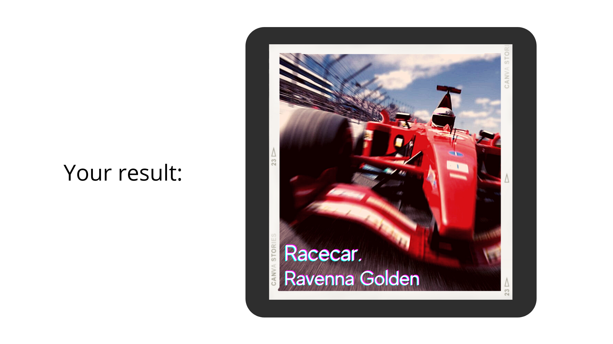

Assignment 3
For this assignment, we were tasked with designing a piece of 'net art'.
My idea is to create an online tool that will create alternate album covers for songs given an input search term.
The top result on spotify when searching the term will be chosen and the artist(s), title, and genre of the song will be used.
Likewise an image result for the search term will be found from google images.
This tool will interact with the internet through its use of possible web APIs for spotify and google images, and through communication
with an outside program to generate and present images to the user.
To create this piece of web art, I would use the Spotify web API to extract
metadata about songs from the Spotify Data Catalogue and I would create a web scraper to find images from Google images. This data would then
be sent to an outside program which would create an image by formatting the songs name, artist, and other pertinent information together
with an image that would be generated by adding photographic effects to the scraped Google image.
My artistic contribution to this project would stem from creating loose templates that the tool could use for the output images. This could
include choosing different fonts that could be used depending on the song's genre or finding image layouts and backgrounds for different styles or themes.
-
Example Input:

-
Example Output:

{kind=link}
Image: The European Space Agency